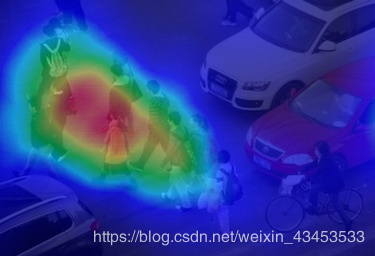

我们在做诸如人群密集度等可视化的时候，可能会考虑使用热力图，在Python中能很方便地绘制热力图。
下面以识别图片中的行人，并绘制热力图为例进行讲解。
步骤1：首先识别图像中的人，得到bounding box的中心坐标。识别方法多样化，坐标也可以自己定义。
步骤2：将所有中心坐标放入一个list类型的变量data中，即data = [[x1,y1] [x2,y2] …]
步骤3：绘制热力图，并将热力图加权叠加到原图上。
需要import的包：
import cv2
import numpy as np
from PIL import Image
from pyheatmap.heatmap import HeatMap
import matplotlib.pyplot as plt根据识别的结果得到data的值，传入以下apply_heatmap(image,data)绘制热力图;
def apply_heatmap(image,data):
'''image是原图，data是坐标'''
'''创建一个新的与原图大小一致的图像，color为0背景为黑色。这里这样做是因为在绘制热力图的时候如果不选择背景图，画出来的图与原图大小不一致（根据点的坐标来的），导致无法对热力图和原图进行加权叠加，因此，这里我新建了一张背景图。'''
background = Image.new("RGB", (image.shape[1], image.shape[0]), color=0)
# 开始绘制热度图
hm = HeatMap(data)
hit_img = hm.heatmap(base=background, r = 100) # background为背景图片，r是半径，默认为10
# ~ plt.figure()
# ~ plt.imshow(hit_img)
# ~ plt.show()
#hit_img.save('out_' + image_name + '.jpeg')
hit_img = cv2.cvtColor(np.asarray(hit_img),cv2.COLOR_RGB2BGR)#Image格式转换成cv2格式
overlay = image.copy()
alpha = 0.5 # 设置覆盖图片的透明度
cv2.rectangle(overlay, (0, 0), (image.shape[1], image.shape[0]), (255, 0, 0), -1) # 设置蓝色为热度图基本色蓝色
image = cv2.addWeighted(overlay, alpha, image, 1-alpha, 0) # 将背景热度图覆盖到原图
image = cv2.addWeighted(hit_img, alpha, image, 1-alpha, 0) # 将热度图覆盖到原图
网站上随意找一张图片进行实验：
原图如下：
结果如下：

可视化效果可以调节，如：通过调节hm.heatmap(base=background, r = 100)中的r即可调节热力点的半径大小。